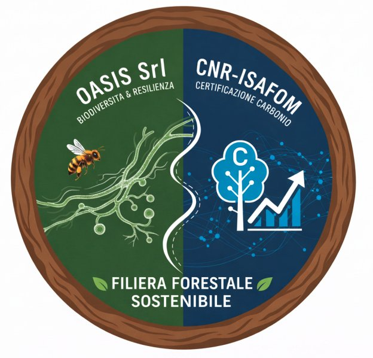
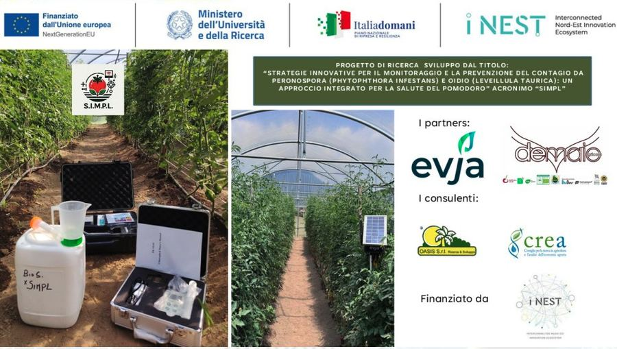
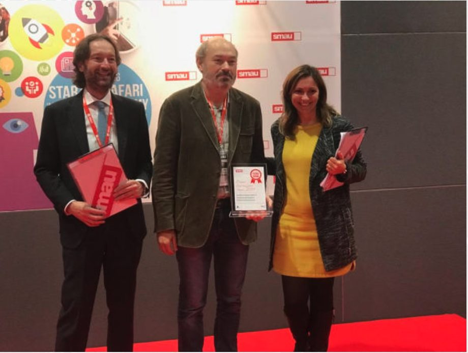
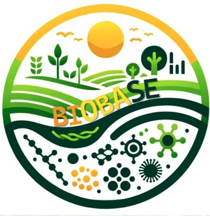
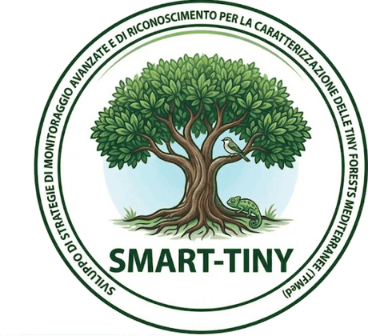
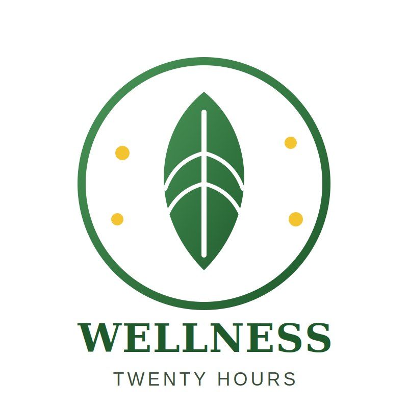
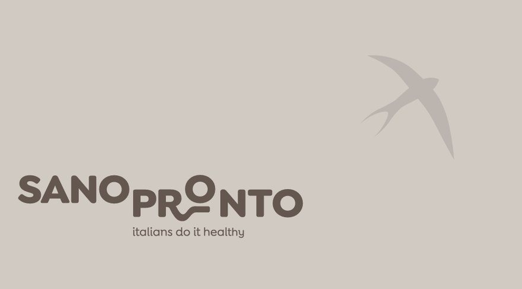
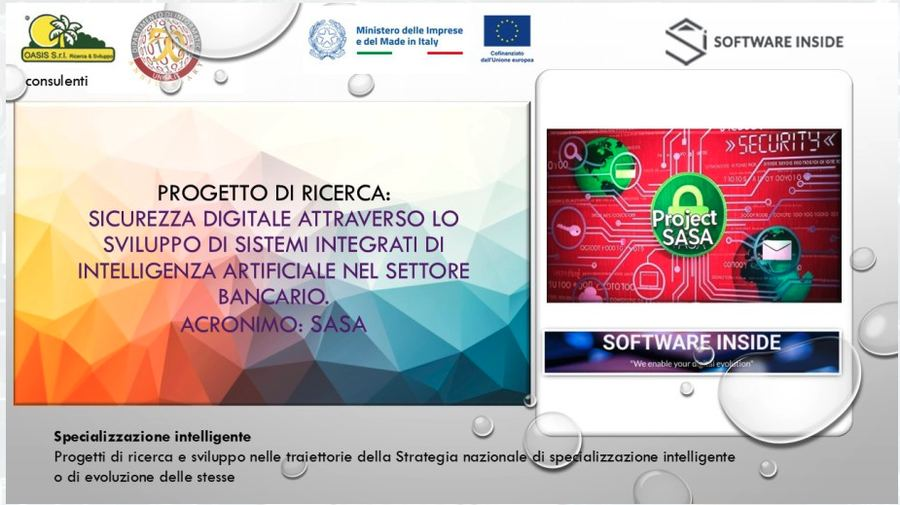
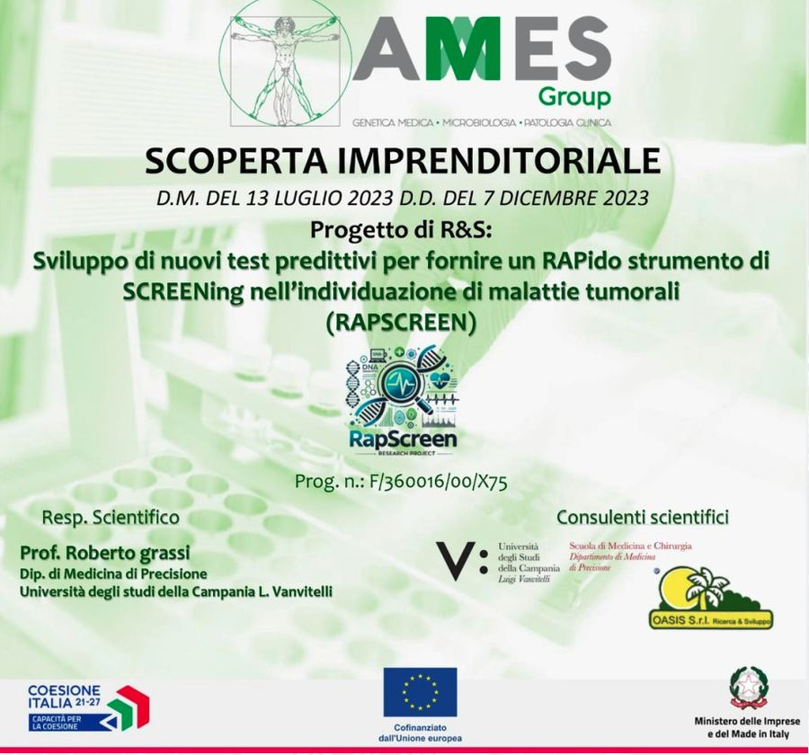
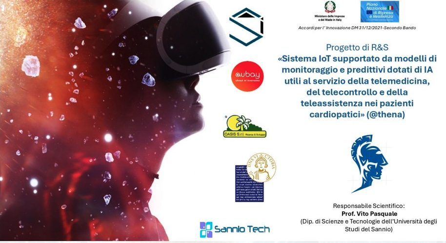

Come Organismo di Ricerca operiamo su tre filoni verticali molto diversi — agroscienze, tecnologie digitali, biomedicale — in partnership con università, centri di ricerca pubblici e imprese di eccellenza. Qui trovi l'elenco completo dei progetti attivi e recentemente conclusi.
"Ogni progetto rappresenta non soltanto un contributo all'avanzamento della conoscenza, ma un investimento diretto nell'efficacia dei protocolli applicati sul campo."
Ricerca applicata all'agricoltura sostenibile, alla difesa biologica e alla gestione del territorio.

Un modello di gestione forestale integrato per i castagneti dell'Appennino meridionale, dove il dato scientifico diventa decisione agronomica e nuovo valore economico per il territorio.
Il programma unisce monitoraggio molecolare del DNA e modellistica satellitare per la salvaguardia della biodiversità e la resilienza climatica degli ecosistemi forestali del Mezzogiorno. Il protocollo SMART-C-SINK quantifica in modo certificabile il sequestro di carbonio organico, trasformandolo in credito di carbonio certificato. OASIS cura sul campo il monitoraggio entomologico e fungino, il telerilevamento satellitare (LiDAR e droni) e il biocontrollo delle specie invasive, con identificazione molecolare via DNA Barcoding.

Strategie innovative per il monitoraggio e la prevenzione del contagio da peronospora (Phytophthora infestans) e oidio (Leveillula taurica): un approccio integrato per la salute del pomodoro.
Progetto di ricerca su tecniche di monitoraggio e prevenzione di due tra le più impattanti malattie fungine del pomodoro, con integrazione di sensoristica di campo e analisi biologica.

★ Premio Innovazione SMAU 2018Sviluppo di prodotti innovativi "biostimolanti e induttori di resistenza" applicabili in metodiche di agricoltura biologica ed integrata (IPM).
L'idea è usare biostimolanti per prevenire le malattie delle piante e ridurre — o eliminare — l'impiego di fitofarmaci: un formulato innestato nel terreno che, miscelando sostanze organiche e microrganismi già presenti in natura, rafforza le difese naturali delle colture. La sperimentazione ha valutato formulati basati su funghi del genere Trichoderma, capaci di stabilire interazioni simbiotiche e di attivare le difese naturali della pianta. Avvio nel maggio 2017, durata 36 mesi.
Progetto di ricerca applicata orientato al trasferimento dei risultati scientifici al comparto agricolo, con particolare attenzione alla comunicazione tecnica in linguaggio accessibile.
Il progetto ha coinvolto imprese, università e centri di ricerca pubblici per portare le innovazioni tecnico-scientifiche direttamente agli operatori del settore. L'esperienza è documentata in tre contributi video del convegno finale, prodotti da Edonè Films Production:
▶ Parte 1 — Presentazione del progetto
▶ Parte 2 — Approfondimento tecnico-scientifico
▶ Parte 3 — Conclusioni e prospettive

Sviluppo di bio-formulati da estratti vegetali e microrganismi benefici per applicazioni agricole sostenibili.
Il progetto studia, identifica e valuta nuove molecole di origine vegetale da combinare con ceppi di microrganismi utili, per sviluppare bio-formulazioni capaci di prevenire e contrastare l'insorgenza di malattie garantendo una produzione di qualità. Prevede lo sviluppo di formulati con proprietà battericide e nematocide e l'impiego di biosensori per la valutazione in tempo reale della fertilità microbica dei terreni.

Sviluppo di strategie di monitoraggio avanzate e di riconoscimento per la caratterizzazione e la commercializzazione delle Tiny Forests Mediterranee (TFMed).
Il progetto adatta il metodo Miyawaki alla creazione di Tiny Forests — micro-ecosistemi forestali urbani a rapido accrescimento — nel contesto mediterraneo. Integra monitoraggio biologico (entomofauna, microbioma del suolo via DNA metabarcoding), strumenti digitali su cloud e analisi economica del ciclo di vita, per valutare servizi ecosistemici, biodiversità e sostenibilità e proporre un "Pacchetto Tiny Forest Mediterraneo" replicabile per istituzioni e aziende.

Formulazione e sviluppo di nuovi prodotti agroalimentari nutraceutici caratterizzati da elevato valore antiossidante attraverso l'applicazione di mild technologies.
Progetto di ricerca e sviluppo per la messa a punto di prodotti agroalimentari ad alto valore nutraceutico, ottenuti con tecnologie a basso impatto (mild technologies) che preservano le proprietà antiossidanti delle materie prime.

Dal progetto di ricerca e sviluppo con acronimo SALUTE a una linea di piatti pronti formulati per chi ha un'esigenza alimentare precisa.
Il progetto nasce dalla collaborazione fra realtà del Sud e del Centro Italia che impiegano tecnologie alimentari di ultima generazione per produrre pietanze nutrizionalmente equilibrate, con la sicurezza per il consumatore come prerequisito. La gamma è articolata in tre linee dedicate: celiaci (senza glutine), ipercolesterolemici e diabetici (a basso indice glicemico), con piatti come la zuppa di grano saraceno con curcuma e olive nere, il riso rosso e verdure primaverili su passata di patate novelle al curry, la minestra di kamut e il calamaro ripieno.
Alla formulazione ha contribuito lo chef stellato Pasquale Palamaro, del ristorante "Indaco" del Regina Isabella Resort di Ischia: l'obiettivo dichiarato del progetto è il connubio fra salute e gusto, non l'uno a scapito dell'altro.
Intelligenza artificiale e sistemi digitali applicati alla sicurezza e ai processi.

Sicurezza digitale attraverso lo sviluppo di sistemi integrati di intelligenza artificiale nel settore bancario.
Progetto di ricerca su sistemi di intelligenza artificiale applicati alla sicurezza informatica per il comparto bancario, con particolare attenzione ai rischi emergenti.
Ricerca applicata alla diagnostica, all'oncologia e alla telemedicina.

Sviluppo di nuovi test predittivi per fornire un RApido strumento di SCREENing nell'individuazione di malattie tumorali.
Progetto di R&S per lo sviluppo di test predittivi rapidi in ambito oncologico, condotto in partnership con AMES Group e l'Università della Campania "Luigi Vanvitelli".

Sistema IoT supportato da modelli di monitoraggio e predittivi dotati di intelligenza artificiale, al servizio della telemedicina, del telecontrollo e della teleassistenza nei pazienti cardiopatici.
Progetto di R&S che integra sensoristica IoT e modelli di intelligenza artificiale per il monitoraggio remoto e la manutenzione predittiva applicati alla cura dei pazienti cardiopatici, con l'obiettivo di rendere più continua ed efficace la teleassistenza.